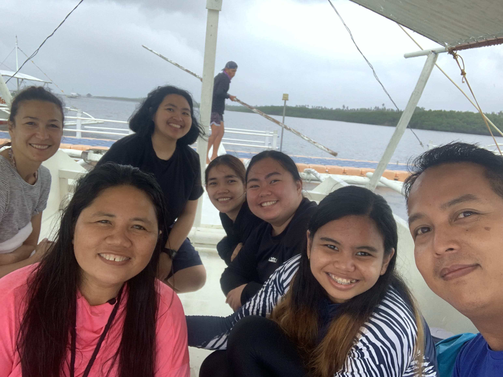

Former Fellows
Scientists who have completed their Science Corps fellowship and continue to make an impact.

Bianca Baldassarri, Ph.D.
Site: Central Visayan Institute Foundation (CVIF), Bohol, Philippines
Bianca taught Research and Physics courses at CVIF. Her fellowship was a journey of connection, learning, and inspiration. She participated in the 10th Jagna International Workshop, engaging with scientists, educators, and students across the region. A memorable highlight was learning to wear the "malong," a traditional Philippine garment, as she immersed herself in local culture while sharing her scientific expertise.
Read her full story →
Swastika Issar, Ph.D.
Site: Central Visayan Institute Foundation (CVIF), Bohol, Philippines
Swastika taught Research Methods at CVIF, where she worked with high school students in Bohol. To encourage conversation in the classroom, she custom-designed "Science is for Everyone" stamps for students' workbooks. Her work with female students inspired her to launch the "Filipinas in STEM" interview series, which highlights the journeys, wins, and struggles of Filipino women in STEM fields through short interviews published on the Science Corps blog.
Filipinas in STEM Series →Victor Sojo, Ph.D.
Site: Aavishkaar, Palampur, India
Victor collaborated with Aavishkaar in India to develop engaging science demonstrations for students and teachers. His DNA extraction video — showing how to extract DNA from bananas using household items — became a widely used educational resource for classroom demonstrations and teacher training workshops throughout the region.
Gaby (Gabriela)
Site: Aavishkaar, Palampur, India
Gaby conducted her fellowship at Aavishkaar in India, documenting her field work in a photo series that captured the spirit of science education in the Himalayan foothills. Her images depict student interactions, field experiments, and the vibrant community at Aavishkaar.
View fellowship photos →
Helena [TODO: fill in last name]
Site: CVIF, Bohol, Philippines
Helena conducted field work at CVIF in Bohol, Philippines in 2023, contributing to Science Corps' ongoing partnership with the institution. [TODO: fill in] — Additional details about Helena's fellowship to be added.
[TODO: fill in] — This list will be expanded with additional former fellows. If you are a former fellow and would like to be listed here, please contact us.